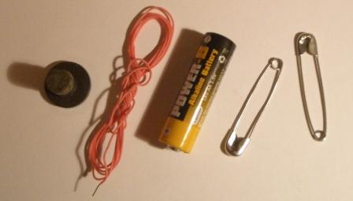
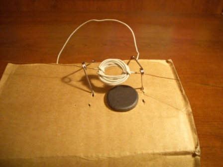
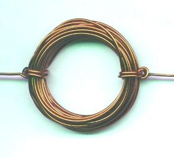
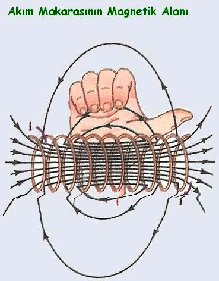
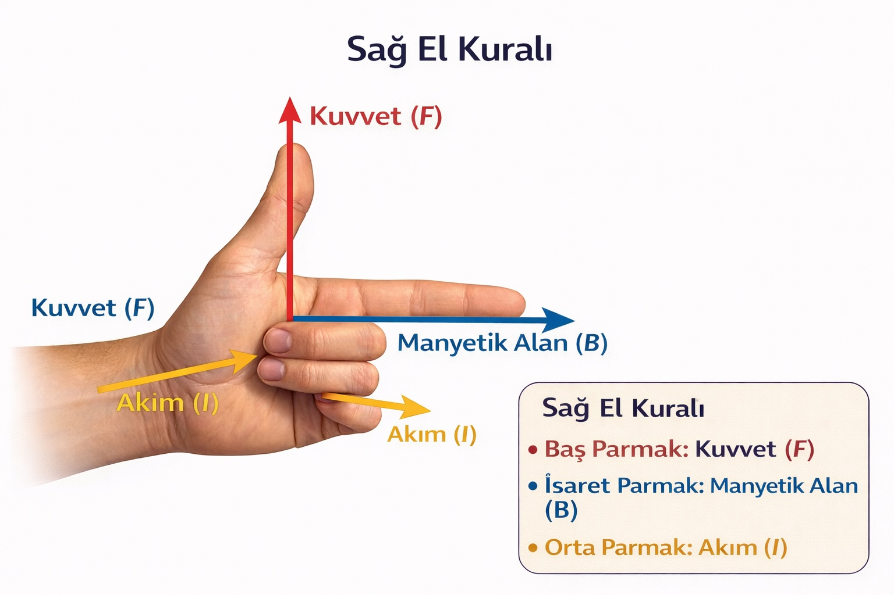

🎯 Deneyin Amacı
Motorun çalışma ilkesini ve manyetik alan içinde akım geçen iletkene etki eden kuvveti anlamak.
🧰 Gerekli Malzemeler
- 1.5 V veya 9 V pil
- Yalıtılmış bakır tel
- 2 adet çengelli iğne
- Mıknatıs

🧪 Deneyin Yapılışı
İlk olarak bobin hazırlanır.

Bobinin uçlarından 3-4 cm tel bırakılır ve yalıtımı soyulur.

Bobin ilmeklere yerleştirilir ve altına mıknatıs konur.

Sistem doğru kurulduğunda bobin dönmeye başlar.
🧠 Deneyin Fiziği
Bobinden akım geçtiği zaman sağ el kuralına göre bobin etrafında manyetik alan oluşur. Bu nedenle bobin bir mıknatıs gibi davranır.

Mıknatıslar arasında aynı kutuplar birbirini iter. Bu nedenle bobinin düzlemi mıknatıs tarafından itilerek dönmeye başlar.
Ancak gerçek elektrik motorlarında süreç daha kontrollüdür. Bobin yarım tur attığında akım yönü değiştirilir. Böylece mıknatıs bobini her zaman aynı yönde iter ve motor sürekli dönmeye devam eder.
Doğru Akım Motorunun Çalışması
Bir doğru akım motoru stator ve rotor olmak üzere iki ana bölümden oluşur. Stator sabit manyetik alanı sağlar. Rotor ise dönen kısımdır.
Rotor üzerindeki sargılardan akım geçtiğinde manyetik alan oluşur. Bu alan statorun manyetik alanı ile etkileşir ve rotor üzerine bir kuvvet uygular.
Bu kuvvet bobinin bir tarafını yukarı, diğer tarafını aşağı doğru iter ve böylece bir tork oluşur.
Motorun sürekli dönmesini sağlayan en önemli parça fırça-kollektör sistemidir. Bu sistem bobin yarım tur attığında akım yönünü değiştirir.
Böylece manyetik kuvvetin yönü değişmez ve bobin sürekli aynı yönde dönmeye devam eder.
Sağ El Kuralı

- Baş parmak → Kuvvet (F)
- İşaret parmağı → Manyetik alan (B)
- Orta parmak → Akım (I)
Manyetik alan içinde akım geçen iletkene etki eden kuvvetin yönü sağ el kuralı ile belirlenir.